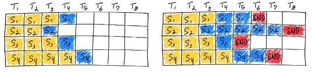
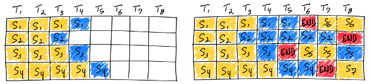

3.1 Continuous Batching #
Batching is one of the oldest and most effective techniques in machine learning deployment. Long before LLMs became mainstream, batching was already the key enabler that allowed production systems to serve many users quickly and cost-effectively. But LLMs introduce new challenges that make traditional batching insufficient, especially during decoding. Continuous batching emerged as the solution, and it has fundamentally reshaped how modern LLM serving systems operate.
In this section, we first examine how batching works in classical inference systems, identify why it breaks for LLMs, and then introduce continuous batching as the natural evolution of batching for autoregressive generation workloads.
Why Batching Is Essential in Real Deployment #
When deploying ML models, one of the first goals is to maximize system throughput (i.e., the number of requests a system can serve per second) while keeping latency low. Batching helps achieve both.
Modern GPUs Encourage Parallelism #
High-end GPUs (A100, H100, B100, etc.) are designed to run large matrix multiplications at extremely high throughput. They have:
- Many SMs capable of executing multiple threads concurrently
- Gigabytes of high-bandwidth memory
- Wide vector units that prefer large, dense workloads
A single user request often does not fully utilize the GPU. But if we group multiple requests into a single batch, we can use far more of the GPU’s compute capacity without significantly increasing the latency for any individual request.
Batching Benefits Both Provider and User #
- Higher throughput, lowering cost per request
- Better GPU utilization, reducing servers needed and operational cost
- Shorter queuing delay, because serving more requests at once drains the queue more quickly
Thus, batching is a win-win: the system becomes cheaper to operate, and users see faster responses.
Why LLMs Make Batching Hard #
Transformer-based LLMs behave very differently from traditional models (like CNNs) during inference. The core difficulty lies in autoregressive decoding, where the model generates one token at a time.
Batching Requires Identical Structure #
To batch multiple requests together, frameworks expect that all requests in the batch:
- Have the same input shape
- Follow the same execution path
- Produce outputs in lockstep
This is fine for tasks with fixed-size inputs (e.g., images). But LLM requests violate almost all of these expectations:
- LLMs vary in context length. User prompt could be a short sentence or a 10-page document.
- Number of decoding steps is unknown. Some generations finish in a few tokens (e.g., short answers), Others take hundreds or thousands of tokens (e.g., stories, code generation)
Straw-man Solution: Static Batching #

A simple way to batch LLM requests is to pad them:
- Wait for a batch of N requests to arrive.
- Decode tokens synchronously, step by step.
- Continue decoding until the longest request finishes.
Problems with Static Batching #
-
Latency Explosion for Short Requests
Short requests finish early, but cannot exit the batch until the longest request finishes. A simple, fast task (e.g., a yes or no question) gets stuck waiting behind someone generating a 500-token story. In conversational systems, this creates terrible user experience. -
Throughput Drops Rapidly
As some requests finish and others continue, the effective batch size shrinks over time. The GPU ends up running small, inefficient matmuls after a few steps.
Static batching is easy to implement but fundamentally mismatched to how LLM decoding works.
Continuous Batching: The Key Idea #
Continuous batching borrows the idea from “iteration-level batching” used in RNN serving systems [1], where sequences can join and leave at each recurrent step.
The intuition is simple:
Instead of batching requests only at the beginning, we should make fine-grained
decision and rebuild the batch at every decoding step.
In other words, the computation unit to be batched becomes one token generation step instead of one request.
How Continuous Batching Works #

At each decode iteration:
- Requests that finish leave immediately
- New requests that complete their prefill can join immediately
- The next decoding step runs on all currently active requests
This dynamic reconstruction of the batch accomplishes several goals:
- Short requests finish quickly
- Long requests don’t block newcomers
- GPU utilization remains high across all decoding steps
Throughput also increases because batch size does not collapse over time
Support Attention KV Cache #
However, Transformer-based LLMs introduce an additional complexity:
Each request maintains a growing Key-Value (KV) cache for attention.
Supporting continuous batching for Transformers therefore requires managing KV caches of different lengths inside the same batch, which vanilla RNN models do not need to handle.
Early systems such as Orca [2] handled this by allocating a large batched KV buffer and designing attention mechanisms that handle variable context lengths. Modern systems like vLLM [3] typically rely on more flexible memory management techniques, such as paged attention (discussed in next section), which makes continuous batching scalable and efficient.
Common Deployment Pattern #
In practice, nearly all high-performance LLM serving systems use:
- Continuous batching for dynamic scheduling
- A flexible KV memory manager (such as paged attention) to support variable-length sequences
Together, these two ideas form the backbone of modern high-throughput low-latency LLM serving architectures. While the Transformer architecture remains the same, the way we feed data to it drastically changes compute efficiency. By rebuilding the batch each token, we can keep GPUs busy, reduce latency, and serve far more users with the same hardware.
References #
-
Gao et al. “Low Latency RNN Inference with Cellular Batching.” Proceedings of the Thirteenth EuroSys Conference. 2018
-
Yu et al. “Orca: A Distributed Serving System for Transformer-Based Generative Models.” 16th USENIX Symposium on Operating Systems Design and Implementation. 2022.
-
Kwon et al. “Efficient Memory Management for Large Language Model Serving with PagedAttention.” Proceedings of the 29th symposium on operating systems principles. 2023.